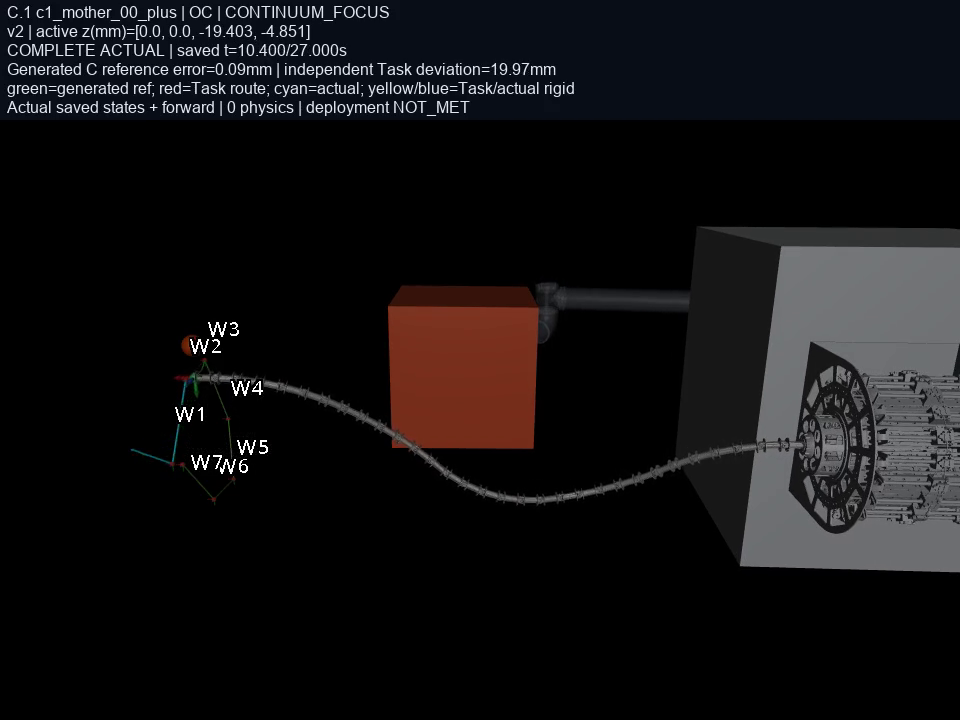
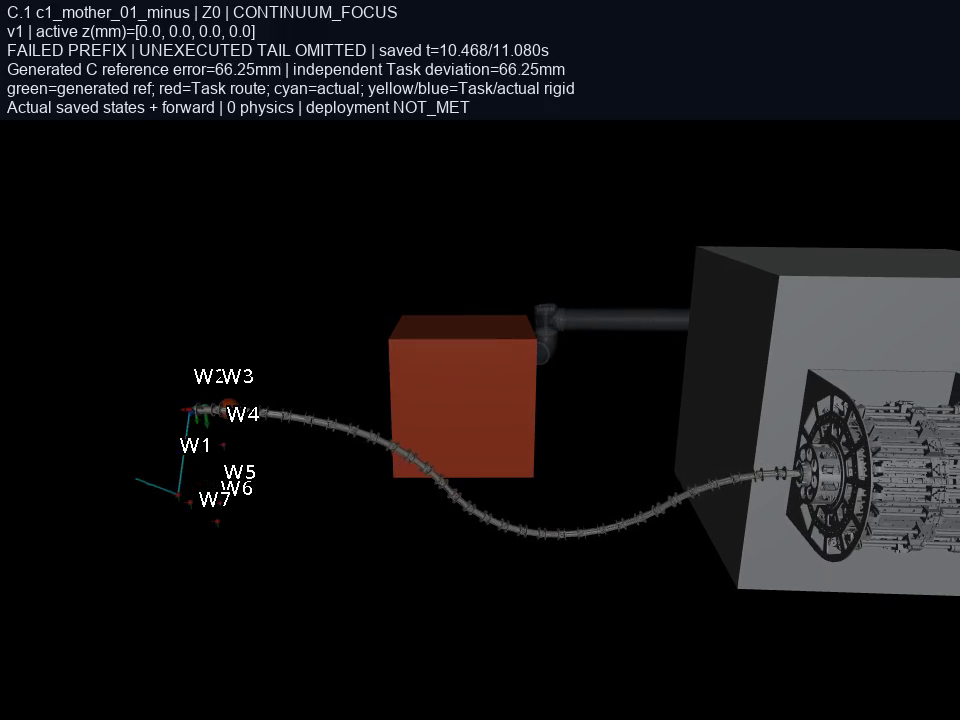
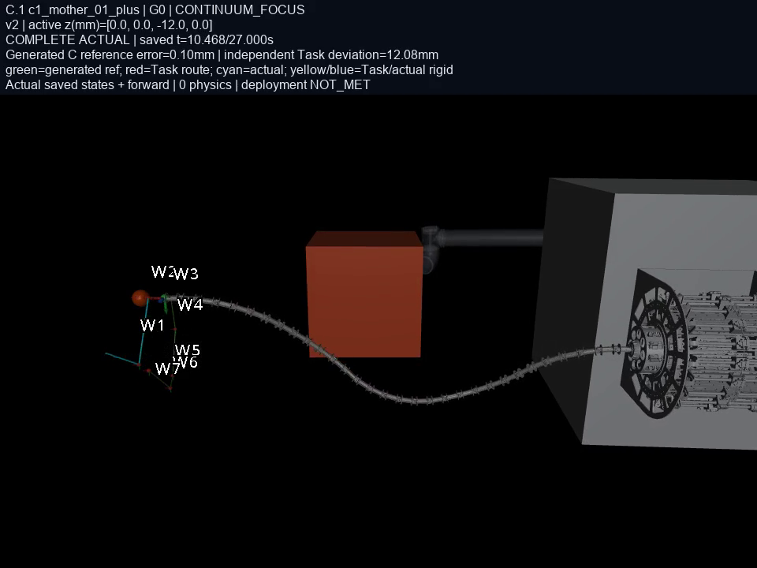

4任务 × Z0 / G0 / OI / OC；16逻辑槽，12条独立实际轨迹，3个复用槽，1个 NO_PLAN。共84段视频、48张诊断图。
结果总览 · 来源与验证记录
视频仅读取保存的 actual 状态，五个视角、合成画面和连续体侧视使用同一帧时序。两条失败前缀分别止于11.08s和10.80s；未执行部分不补齐。跟踪误差在实际消耗的QP输入时刻计算，另显示原始任务路线偏差。部署 NOT_MET；可视化不增加安全验收。
TASK_COMPLETED · 独立实际轨迹
TASK_COMPLETED · 复用 G0 的同一实际证据
TASK_COMPLETED · 复用 Z0 的同一实际证据


EXECUTION_REFUSED · 独立实际轨迹
NO_PLAN · 无计划，不执行 fallback，无视频或误差轨迹
